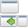
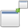
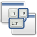
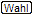

CCSM Fensterverwaltung
Artikel für fortgeschrittene Anwender
Dieser Artikel erfordert mehr Erfahrung im Umgang mit Linux und ist daher nur für fortgeschrittene Benutzer gedacht.
Dieser Artikel wurde für die folgenden Ubuntu-Versionen getestet:
Ubuntu 16.04 Xenial Xerus
Ubuntu 14.04 Trusty Tahr
Zum Verständnis dieses Artikels sind folgende Seiten hilfreich:
- Optionen bei Fensterverwaltung
- Beschreibungen der Optionen
- Anwendungs-Umschalter
- Fenster platzieren
- Fenster skalieren
- Fenster verschieben
- Fenster positionieren
- Grid
- Gruppiere und Tabbe Fenster
- Maximumize
- Regeln für Fenster
- Ring-Anwendungs-Umschalter
- Shelf
- Shift Switcher
- Skalieren
- Snapping Windows
- Static Application Switcher
- Zusätzliche Fenstermanager Aktionen
- Links
Der CompizConfig Einstellungs-Manager (abgeleitet aus der Paketbezeichnung nachfolgend mit "CCSM" abgekürzt) bietet umfangreiche Möglichkeiten, das Verhalten auf dem Bildschirm, das Aussehen diverser Komponenten sowie die Eingriffe durch die Tastatur und die Maus einzustellen.
Dieser Abschnitt behandelt die unter dem Thema "Fensterverwaltung" im Startbildschirm vom CCSM zusammengefassten Einstellungen. Mit diesen Einstellungen kann man eine große Zahl von Effekten realisieren, insbesondere an Fenstern, mit Fenstern, der Arbeitsfläche und dem Desktop allgemein.
Optionen bei Fensterverwaltung¶
Nachfolgend ist eine Übersicht aller Beschreibungen aufgeführt, die sich mit dem Thema Fensterverwaltung befassen. Durch Anklicken des jeweiligen Icons bzw. des Titels gelangt man zur jeweiligen Detailbeschreibung.
Standard-Optionen¶
Zusatz-Optionen¶
| Gruppiere und Tabbe Fenster |  | Maximumize | |
|  | Shelf |  | Zusätzliche Fenstermanager-Aktionen |
Diese Zusatz-Optionen sind erst verfügbar nach der Installation des Paketes:
compiz-plugins-extra (universe, [1])
 mit apturl
mit apturl
Paketliste zum Kopieren:
sudo apt-get install compiz-plugins-extra
sudo aptitude install compiz-plugins-extra
Legende in den Tabellen¶
Die Symbole in den Erläuterungen haben folgende Bedeutung:
 = Auswahl/Wechsel erfolgt durch Anklicken
= Auswahl/Wechsel erfolgt durch Anklicken = Einstellung der Tasten erfolgt in einer Auswahlbox
= Einstellung der Tasten erfolgt in einer Auswahlbox = Auswahl wird in einem "DropDown" vorgegeben
 = Einstellung erfolgt über einen "Schieber"
= Einstellung erfolgt über einen "Schieber" = steht für die Eingabe eines zulässigen Textes
= steht für die Eingabe eines zulässigen Textes = diese Beschreibung ist erst ab Natty Narwhal verfügbar
= diese Beschreibung ist erst ab Natty Narwhal verfügbar
Hervorgehobene Werte bei den Einstellungen verweisen auf die bei der Installation vorgegebene Standardeinstellung.
Beschreibungen der Optionen¶
Anwendungs-Umschalter¶
Diese Option hat viele Anbindungen an Fenster und Hinweisboxen, die ggf. auch in anderen Optionen enthalten sind. Deshalb sollte eine pauschale Aktivierung nur vorgenommen werden, wenn man die einzelnen Positionen/Anbindungen auf doppelte Belegung überprüft hat. Insbesondere stellt der Anwendungsumschalter die gleichen Funktionen bereit, wie es das GNOME-Desktop bzw. das KDE-Desktop mit dem Alt + Tab ⇆ -Umschalter besitzt. Compiz unterscheidet sich nur in der Bereitstellung von Vorschaubildern und anderer Extras beim Umschalten.
Umschalter Maus-Tastenkombination¶
Folgende Bindungen zu einer Tastenkombinationen bzw. zu einer Maus-Tastenkombination sind einstellbar:
"Nächstes Fenster"
"Vorheriges Fenster"
"Nächstes Fenster (Alle Arbeitsflächen)"
"Vorheriges Fenster (Alle Arbeitsflächen)"
"Nächstes Fenster (Ohne Vorschaufenster)"
"Vorheriges Fenster (Ohne Vorschaufenster)"
"Nächstes Panel"
"Vorheriges Panel"
Umschalter Fenstereinstellungen¶
Hier können Einstellungen beim Umschalten hinsichtlich Aussehen, Verhalten sowie der Geschwindigkeit vorgegeben werden. Der Funktionsumfang wurde unter Natty Narwhal erweitert, diese Optionen sind mit gekennzeichnet.
| Funktion | Typ | Beschreibung |
| "Geschwindigkeit" | | Hiermit wird die Geschwindigkeit eingestellt, die es braucht, die Umschaltung einschließlich der Anzeige auszuführen. Standardwert = 1,5000 |
| "Zeitintervall" | | Hiermit wird die Geschwindigkeit eingestellt, bis eine Neuberechnung der abgefragten Tasten erfolgt. Standardwert = 1,2000 |
| "Fensterauswahl" | | Hier werden die Fenster und Hinweisboxen eingetragen, die im Umschaltmodus berücksichtigt werden sollen. |
| "Mipmaps" | | Wenn möglich zur Verbesserung der Darstellung Mipmaps verwenden. |
| "Sättigung" | | Hiermit wird die Farbsättigung der Fenster während der Umschaltung eingestellt. Standardwert = 100 % |
| "Helligkeit" | | Hiermit wird die Helligkeit der Fenster während der Umschaltung eingestellt. Standardwert = 65 % |
| "Transparenz" | | Hiermit wird die Transparenz der Fenster während der Umschaltung eingestellt. Standardwert = 40 % |
| "Beim Umschalten Fokussieren" | | Gebe Fenstern den Fokus, wenn diese während des Umschaltens sichtbar sind |
| "In den Vordergrund verschieben" | | Das ausgewählte Fenster (welches zuletzt vorne liegt) in den Vordergrund holen und den Fokus geben. |
| "Zoom" | | Hiermit wird eine Verkleinerung der Arbeitsfläche eingestellt. Standardwert = 1,0000 |
| "Icon" | | Hiermit wird auf die verkleinerte Darstellung das relvante Icon der Anwendung gelegt. |
| "Zeige nur Icon" | | Zeige nur das relevante Icon und verzichte auf die Darstellung von verkleinerten Darstellungen. |
| "Minimiert" | | Es werden minimierte Fenster in die Darstellung mit einbezogen, allerdings nur mit ihrem Icon. |
| "Automatisch Arbeitsfläche wechseln" | | Es wird zur Arbeitsfläche des selektierten Fensters gewechselt - aber nur bei entsprechender Tastenkombination, die alle Arbeitsflächen abfragt. |
Fenster platzieren¶
Mit den folgenden Einstellungen kann man bestimmen, wo und wie ein Fenster / ein Objekt auf dem Desktop abgelegt werden soll, sobald man diese über eine Anwendung initiiert.
Platzieren Allgemein¶
| Funktion | Typ | Beschreibung Allgemein |
| "Workarounds" | | Hinweis:Sobald man nur eine der anderen, nachfolgenden Einstellungen benutzen will, muss diese Option aktiviert sein. |
| "Platzierungsmodus" | In einem DropDown kann man verschiedene Arten aussuchen, wie die Fenster allgemein ausgerichtet werden sollen. Nur Einstellungen gemäß nächstem Abschnitt können diese Einstellungen ignorieren. | |
| Einstellungen sind: "Kaskadenförmig", "Zentriert", "Inteligent", "Maximieren", "Zufällig", "Unter dem Mauszeiger". | ||
| "Modus für Mehrfachausgabe" | In einem DropDown kann man bei mehreren Bildschirmen vorgeben, wie und wo ein Fenster geöffnet werden soll. | |
| Einstellungen sind: "Benutze das momentane Desktop", "Benutze das Desktop mit Mauszeiger", "Benutze die Arbeitsfläche mit aktivem Fenster", "Benutze zufällig irgend eine Arbeitsfläche" | ||
| "Erzwinge Fensterplazierung" | In dieser Eingabezeile kann man nach mehreren Kriterien eine Auswahl zu den Fenstern festlegen. |
Platzieren bestimmen¶
Hiermit kann man die Position, die Anordnung und die benutzte Arbeitsfläche eines Fensters beim Start bestimmen. In getrennten Listen kann man Vorgaben machen nach:
horizontaler bzw. vertikaler Nullpunkt (Fenster oben links)
Anordnung auf der Arbeitsfläche
auf welcher Arbeitsfläche das Fenster abgelegt werden soll
Fenster skalieren¶
Mit dieser Option kann man das aktive Fenster auf der Arbeitsfläche (alternativ zu einer normalen Bearbeitung mit der Maus) auch mit Tastenkombinationen in seiner Größe verändern. Der Einstellvorgang zur Auswahl der Tasten- bzw. Mausaktionen wurde unter Natty Narwhal verändert sowie der Funktionsumfang unter "Allgemein" erweitert, dieses ist mit gekenzeichnet.
Skalieren Initiieren¶
Am Beispiel der allgemeinen Initiierung wird der weitere Ablauf beschrieben, der für alle Ubuntu-Versionen zutrifft. Die Art der Veränderung wird unter Skalieren Allgemein - "Standard-Modus" festgelegt.
| Funktion | Typ | Initialisierung mit Maus-Tastenkombination |
| "Fensterskalierung initieren" | | In einer Auswahlbox wird eine Maus-Tastenkombination eingestellt. |
Standardeinstellung ist
Alt +  . Nach dem Gedrückthalten der eingestellten Maus-Tastenkombination wird das aktive Fenster durch Veränderung des Mauszeigers zu einem "Ziehensymbol" maskiert. Je nachdem wo man den Mauszeiger positioniert hatte, wird vom dazugehörigen Rand bzw. Ecke her das Fensters verändert. . Nach dem Gedrückthalten der eingestellten Maus-Tastenkombination wird das aktive Fenster durch Veränderung des Mauszeigers zu einem "Ziehensymbol" maskiert. Je nachdem wo man den Mauszeiger positioniert hatte, wird vom dazugehörigen Rand bzw. Ecke her das Fensters verändert. |
| Funktion | Typ | Initialisierung mit Tastenkombination |
| "Fensterskalierung initieren" | | In einer Auswahlbox wird eine Tastenkombination eingestellt. |
| Standardeinstellung ist Alt + F8 . Nach dem Aufruf mit der eingestellten Tastenkombination wird das aktive Fenster durch Veränderung des Mauszeigers zu einem "Greifsymbol" maskiert. | ||
| "Bearbeitung mit Tasten" | Mit einer der Pfeiltasten bewegt man sich zu dem Rand, den man verändern will. Der Mauszeiger springt zu dem angewählten Rand, verändert seine Form zum "Ziehensymbol". Nun kann man durch Drücken der gleichen und der gegenläufigen Pfeiltaste den Rand bewegen. | |
| Wurde der falsche Rand angesprungen oder will man auch die dazu quer liegende Richtung bearbeiten, so drückt man z.B. bei einer momentan horizontalen Bearbeitung eine der vertikalen Tasten (statt ← oder → dann ↑ bzw. ↓ ). | ||
| Abgeschlossen wird der Vorgang mit der ⏎ -Taste. | ||
| "Bearbeitung mit der Maus" | Will man nach der Initialisierung die Veränderung am Fenster mit der Maus (das Griffsymbol wird angezeigt) weiter bearbeiten, so bewegt man den Mauszeiger zu dem Rand, den man bearbeiten will. | |
| Der Mauszeiger springt zu dem angewählten Rand, verändert seine Form zum "Ziehensymbol". Nun kann man durch eine weitere Bewegung des Mauszeigers in die gewünschte Richtung bzw. Gegenrichtung das Fenster in seiner Größe verändern. | ||
Man kann die Maus auch, anders als bei der Bearbeitung mit Tasten beschrieben, auch direkt in eine der Ecken vom Fenster dirigieren und man kann das Fenster in der Diagonalen verändern. Abgeschlossen wird mit der  (alternativ auch mit der
⏎ -Taste). (alternativ auch mit der
⏎ -Taste). | ||
| "Wechsel zwischen Tasten und Maus" | Man kann jederzeit während einer laufenden Veränderung zwischen der Mausfunktion bzw. Tastenfunktion wechseln. | |
Skalieren Allgemein¶
Hier werden allgemeine Einstellungen sowie spezielle Angaben zu (selektierbaren) Fenstern bzw. Objekten eingetragen.
| Funktion | Typ | Beschreibung |
| "Standard-Modus" | In einem DropDown kann man den Modus auswählen, der bei der allgemeinen Einstellung (siehe oben) benutzt werden soll. Auswählbar sind: "Normal", "Umriss", "Rechteck", "Strecken" | |
| "Rahmenfarbe" | In einer Farbauswahlbox kann man die Rahmenfarbe auswählen, die um das Fenster/Objekt gezeichnet wird, während eine Veränderung in Bearbeitung ist. | |
| "Füllfarbe" | In einer Farbauswahlbox kann man die Füllfarbe auswählen, die das Fenster/Objekt überlagert, während eine Veränderung in Bearbeitung ist. | |
| "Fenster/Objekte zuordnen" | | Zu den verschiedenen Modi kann man bestimmte Fenster bzw. Objekte gezielt zuordnen. |
Hinweis:
| ||
klickt das  mit der -Taste an und es wird eine Eingabemaske geöffnet. In dieser Eingabemaske kann man nach mehreren Kriterien eine Auswahl zu den Fenstern festlegen. mit der -Taste an und es wird eine Eingabemaske geöffnet. In dieser Eingabemaske kann man nach mehreren Kriterien eine Auswahl zu den Fenstern festlegen. |
Fenster verschieben¶
Mit dieser Option kann man das aktive Fenster auf der Arbeitsfläche (alternativ zum normalen Verschieben mit der
Alt + Kombination) auch mit Tastenkombinationen verschieben.
Verschieben Allgemein¶
| Funktion | Typ | Initialisierung mit Maus-Tastenkombination |
| "Fensterverschiebung initieren" | | In einer Auswahlbox wird eine Maus-Tastenkombination eingestellt. |
| Standardeinstellung ist
Alt + . Mit der eingestellten Maus-Tastenkombination wird das aktive Fenster durch Veränderung des Mauszeigers zu einem "Greifsymbol" maskiert. | ||
| Bei gedrückt gehaltener Maus-Tastenkombination wird durch Bewegen der Maus das Fenster / Objekt mit den nachfolgend beschriebenen Parametern verschoben. | ||
| Funktion | Typ | Initialisierung mit Tastenkombination |
| "Fensterverschiebung initiieren" | | In einer Auswahlbox wird eine Tastenkombination eingestellt. |
| Standardeinstellung ist Alt + F7 . Mit der eingestellten Tastenkombination wird das aktive Fenster durch Veränderung des Mauszeigers zu einem "Greifsymbol" maskiert. | ||
| "Verschieben mit Tasten" | Mit den Pfeiltasten ← / → / ↑ / ↓ wird das Fenster / Objekt mit den nachfolgend beschriebenen Parametern verschoben. | |
| Abgeschlossen wird der Vorgang mit der ⏎ -Taste. | ||
| "Verschieben mit der Maus" | Will man nach der Initialisierung die Veränderung am Fenster mit der Maus (das "Greifsymbol" wird angezeigt) verschieben, so bewegt man die Maus - ohne das man irgend eine andere (Maus-) Taste drückt. | |
| Abgeschlossen wird mit der (alternativ auch mit der
⏎ -Taste). | ||
| Funktion | Typ | Parameter Fenster verschieben |
| "Transparenz" | | Hiermit wird die Tranparenz des Fensters beim Verschieben eingestellt. |
| Standardwert = 100 % (undurchsichtig) | ||
| "Y einschränken" | | Anmerkung: Zeigt bisher keine erkennbare / eindeutige Reaktion |
| "Einrasten maximierter .." | | ".. Fenster aufheben": Hiermit kann das Einrasten (Klebrigkeit) maximierter Fenster zum Verschieben aufgehoben werden. |
| "Ökonomisch positionieren" | | Hiermit wird das Verschieben nicht durch andere Anforderungen, z.B. serverseitige Positionierungen des Fensters, bis zum Abschluss des Verschieben unterbunden. |
Fenster positionieren¶
Dieses Plugin ist eine Sammlung von vielen, vielen Maus-Tastenkombinationen, deren Auswirkung in den Informations-PopUps ausreichend beschrieben wird. Die Einstellung erfolgt immer nach dem gleichen Muster:
Positionierung Tasteneinstellungen¶
| Funktion | Typ | Beschreibung |
| "Musterbeispiel" | | In einer Auswahlbox wird eine Maus-Tastenkombination eingestellt. Hierbei wird der volle Umfang der Tastatur eingesetzt, also auch alles, was rechts von der normalen Tastatur liegt, z.B: Nummernblock. Dieses wird z.b.: mit "KPinsert" bezeichnet und entspricht der Einfg (Einfügen-Taste), mit "KP8" wird die acht (8) auf dem Nummernblock genutzt - eingeschalteter Nummernblock vorausgesetzt. |
Hinweis:Diese Einstellungen sind für den Einsatz auf einem Notebook bzw. Netbook nicht geeignet! |
Positionierung Sonstige Optionen¶
Hier werden Zusatzeinstellungen zu obigen Maßnahmen eingestellt.
| Funktion | Typ | Beschreibung |
| "Fokussierung entziehen" | | Entziehe einem Fenster den Fokus, wenn es von der Arbeitsfläche genommen wird. |
| "Fenster zentrieren" | | Hiermit soll die aktuelle Position des Mauszeigers dazu benutzt werden, das Fenster zu positionieren. |
| "Nicht außerhalb des Desktops ablegen" | | Hiermit soll sichergestellt werden, dass ein Fenster insgesamt nicht außerhalb des Desktop abgelegt wird. |
| "Abstände links" | | Mindestabstand eines Fensters nach dem Ablegen vom linken Rand der Arbeitsfläche. |
| "Abstände rechts" | | Mindestabstand eines Fensters nach dem Ablegen vom rechten Rand der Arbeitsfläche. |
| "Abstände oben" | | Mindestabstand eines Fensters nach dem Ablegen vom oberen Rand der Arbeitsfläche. |
| "Abstände unten" | | Mindestabstand eines Fensters nach dem Ablegen vom unteren Rand der Arbeitsfläche. |
Positionierung Animation¶
Hier werden Zusatzeinstellungen zu obigen Maßnahmen eingestellt.
| Funktion | Typ | Beschreibung |
| "Geschwindigkeit" | | Hiermit wird die Geschwindigkeit eingestellt, mit der eine Verschiebung erfolgen bzw. eine neue Position eingenommen werden soll. Standardwert = 2,5000 |
| "Zeitintervall" | | Zeitintervall mit der eine Neuberechnung der Position erfolgen soll. Standardwert = 0,5000 |
Grid¶
Hinweis:
Diese Einstellungen sind für den Einsatz auf einem Notebook bzw. Netbook nicht geeignet, da im Wesentlichen Tasten aus dem Bereich rechts von der Tastatur wie z.B. dem Nummernblock eingesetzt werden!
Dieses Plugin ist eine Sammlung von Maus-Tastenkombinationen, das die Fenster in ein imaginäres Gitter zwängt und dabei Anpassungen in der Position als auch in der Größe vornimmt.
Die Art der Einstellungen sind mit denen von den obigen Tasteneinstellungen vergleichbar.
Ab Natty Narwhal wurde der Umfang um die Einstellungen für Bildschirmränder/-ecken, Abstände der Fenster zum Rand sowie die allgemeine Erscheinung erweitert.
Achtung!
Dieses Plugin ist ab Natty Narwhal als Standard gesetzt. Es kann beim Verschieben von Fenstern dazu führen, dass diese sich automatisch maximieren. Es wird empfohlen, dieses Plugin insgesamt zu deaktivieren!
Grid Ränder und Ecken¶
Hier werden die Maßnahmen im Einzelnen spezifiziert, welche Auswirkungen sich hinter den Tasteneinstellungen verbergen - diese können in verschiedenen DropDown-Menüs ausgewählt werden.
Man kann außerdem allgemeine Einstellung zu einem Mindestabstand zu den Rändern festgelegen, die die Fenster bei diesen Aktionen einhalten sollen.
Grid Erscheinung¶
| Funktion | Typ | Beschreibung |
| "Zeichne Indikator" | | Hiermit kann man festlegen, dass ein Indikator (einfacher Rahmen) um das Fenster gelegt werden soll |
| "Rahmenfarbe" | In einer Farbauswahlbox kann man die Farbe des Indikators aussehen soll. | |
| "Füllfarbe" | In einer Farbauswahlbox kann man die Farbe einstellen, die das Fenster bei den Aktionen überdecken und somit die Sichtbarkeit/Zuordnung erleichtern soll. | |
| "Indikator Richtung" | Hier kann man bestimmen, wie der Indikator um/auf das Fenster gelegt werden soll. Einstellungen sind: "Vom Fenster her", "Von den Rändern her" | |
| "Indikator Type" | Es gibt z.Zt. nur die Einstellung "Umriss". | |
| "Hinter dem Fenster" | | Hier kann man bestimmen, ob der Indikator optisch auf dem Fenster oder dahinter liegen soll. |
Gruppiere und Tabbe Fenster¶
Mit diesem Plugin kann man Fenster zu Gruppen zusammenfassen und innerhalb der Gruppen zwischen den Fenstern einer Gruppe hin- und herschalten - "Tabben". Am Beispiel eines Browser lassen sich Vergleiche herstellen.
Gruppen wären die einzelnen Fenster eines Browsers
Tabs sind die Anzeigeflächen innerhalb eines Browserfenster
Die Einstellungen werden in mehreren Bereichen und Kategorien vorgenommen.
Achtung!
Viele der Maus-Tastenkombinationen kollidieren mit den Unity-Basiseinstellungen. Deshalb sollte man diese Option nur mit Bedacht konfigurieren!
Tabben Auswählen¶
| Funktion | Typ | Beschreibung |
| "Auswahl mit der Maus" | | Hier kann man in einer Auswahlbox die Fensterauswahl mit der Maus einstellen, um ein Fenster einer Gruppe zuzuführen. Standardeinstellung ist "Deaktiviert" |
| "Auswahl mit Tasten" | | Hier kann man in einer Auswahlbox die Fensterauswahl mit einer Tastenkombination einstellen, um ein Fenster einer Gruppe zuzuführen. |
| Standardeinstellung ist Windows + S (siehe auch obigen Warnhinweis) | ||
| "Tranparenz" | | Hier kann man die Tranparenz einstellen, das das ausgewählte Fenster während der Zuordnung einnimmt. Standardwert = 80 % |
| "Farbsättigung" | | Hier kann man die Farbsättigung einstellen, das das ausgewählte Fenster während der Zuordnung einnimmt. Standardwert = 20 % |
| "Helligkeit" | | Hier kann man die Helligkeit einstellen, das das ausgewählte Fenster während der Zuordnung einnimmt. Standardwert = 70 % |
| "Bestimmung" | | Hier kann man einstellen, wie groß der sichtbare Bereich im Minimum sein muss (bezogen auf die Arbeitsfläche insgesamt), in der sich die Gruppe befindet, in das das Fenster zugeordnet werden soll. Standardwert = 25 %. Damit wird die Präzision/Zuverlässigkeit bei der Zuordnung geregelt. |
| "Farbe bei der Auswahl" | In einer Farbauswahlbox wird die Farbe bestimmt, die der Indikator (das Rechteck um das Fenster) haben soll. | |
| "Rahmenfarbe Indikator" | In einer Farbauswahlbox wird die Farbe bestimmt, die der Rahmen vom Indikator haben soll. | |
Tabben Gruppe bearbeiten¶
in mehreren Auswahlboxen für eine Tastenkombination können die Anbindungen zur Gruppeneinstellung vorgenommen werden.
Gruppiere Fenster
Löse Fenster aus einer Gruppe
Verschiebe eine Gruppe
Schließe eine Gruppe
Ignoriere eine Gruppe
Achtung!
Viele der Maus-Tastenkombinationen kollidieren mit den Unity-Basiseinstellungen. Deshalb sollte man diese Option nur mit Bedacht konfigurieren!
Tabben Einstellen¶
In mehreren Bereichen und Kategorien werden hier für das eigentliche Tabben die Einstellungen vorgenommen. In den Bereichen sind die Optionen/die Einstellungen in der Regel selbsterklärend aufbereitet. Hier eine Übersicht
Tastenkombinationen
Verschiedene Optionen
Einstellungen zu Animationen
Erscheinungsbild
Fensterbeschriftung
Steckplatz (Tabs) Organisation
Tabben Erkennung¶
| Funktion | Typ | Beschreibung |
| "Aufleuchten initieren" | | Fenster einer Gruppe sollen durch den optischen Effekt deren Zuordnung signalisieren. |
| "Ausmaß beim Glühen" | | Hiermit wird ein Bereich um die Gruppe festgelegt, um eine Wiedererkennung und Zuordnung der aktiven Gruppe zu ermöglichen. |
| "Form des Glühbereiches" | In einem DropDown-Menü kann man zwischen "rechteckig" und "ringförmig" wählen. | |
| "Farbe wechseln" | | In einer Tastenauswahlbox kann man eine Kombination bestimmen, mit der man einen Farbwechsel beim Glühen herbeiführt. Dieser Farbwechsel erfolgt dann eher zufällig, aber scheinbar in Abgleich mit den Einstellungen im Umfeld der Gruppe. |
Tabben Allgemeines¶
Hier kann man verschiedene Aktionen aussuchen und aktivieren, was innerhalb einer Gruppe passieren soll, wenn ein Fenster bewegt oder in seiner Form verändert wird.
Maximumize¶
Bei dieser Option werden Einstellungen vorgenommen, die Regeln aufstellen, wie beim Maximieren von Fenstern vorgegangen werden soll, um Konflikt weitestgehend zu vermeiden. Die Einstellung sind unterteilt in:
Optionen
Tastenkombinationen für die Modi beim Maximieren
Tastenkombinationen für die Modi beim Minimieren
Regeln für Fenster¶
Hiermit werden für ausgesuchte Fenster bzw. Objekte Regel festgelegt. Unter dem ersten
Reiter / Tab "Übereinstimmungen"
wird eine Liste mit verschiedenen Eigenschaften aufgeführt.
Unter einem zweiten
Reiter / Tab "Größen Regeln"
kann man je Fenster bzw. Objekt einen Eintrag generieren.
Ring-Anwendungs-Umschalter¶
Diese Option hat viele Anbindungen an Fenster und Hinweisboxen, die ggf. auch in anderen Optionen enthalten sind. Deshalb sollte eine pauschale Aktivierung nur vorgenommen werden, wenn man die einzelnen Positionen/Anbindungen auf doppelte Belegung überprüft hat. Insbesondere stellt der Ringumschalter die gleichen Funktionen bereit, wie es das GNOME-Desktop bzw. das KDE-Desktop mit dem Alt + Tab ⇆ -Umschalter besitzt. Compiz unterscheidet sich nur in der Bereitstellung von Vorschaubildern und anderer Extras beim Umschalten.
Dieser Umschalter ist in eine Zwei-Dimensionale (2-D) Struktur eingebunden. Für dia adequate Drei-Dimensionale (3-D) Struktur siehe Shift Switcher. Die beiden Plugins sollten nicht gleichzeitig eingesetzt werden.
Ringumschalter Maus-Tastenkombination¶
Es sind jeweils folgende Bindungen zu einer Maus-Tastenkombinationen bzw. zu einer Tastenkombination einstellbar:
"Nächstes Fenster"
"Vorheriges Fenster"
"Nächstes Fenster (Alle Arbeitsflächen)"
"Vorheriges Fenster (Alle Arbeitsflächen)"
"Nächstes Fenster (in einer Gruppe)" (siehe Tabben)
"Vorheriges Fenster (in einer Gruppe)"
Man kann zu den jeweiligen Zuordnung entsprechende Einstellungen vornehmen.
Ringumschalter Sonstiges¶
| Funktion | Typ | Beschreibung |
| "Geschwindigkeit" | | Hiermit wird die Geschwindigkeit eingestellt, die es braucht, die Umschaltung einschließlich der Anzeige auszuführen. Standardwert = 1,5000 |
| "Zeitintervall" | | Hiermit wird die Geschwindigkeit eingestellt, bis eine Neuberechnung der Anzeigen erfolgt. Standardwert = 1,2000 |
| "Transparenz inaktive Fenster" | | Hiermit wird die Transparenz von inaktiven Fenstern während der Verschiebung im Ring vorgegeben. Standardwert = 100 % (undurchsichtig) |
| "Fenster im Ring" | | Hier wird in einer Liste eingetragen, welche Fenster bzw. Objekte einbezogen werden sollen. Durch Anklicken des mit der -Taste wird die Eingabemaske zur Bestimmung der Fenster aufgerufen. |
| "Icon anzeigen" | Hier kann man über ein DropDown bestimmen, ob überhaupt und welches Symbol auf die Fenster zur Erkennung während der Verschiebung gelegt werden soll. Einstellungen sind "Keine Anzeige", "kleines Icon" (unten rechts), "großes Icon" (über dem Vorschaubild) | |
| "Hintergrund abdunkeln" | | Hiermit wird festgelegt, dass während einer Verschiebung der Hintergrund abgedunkelt werden soll. |
| "Zeige minimierte Fenster an" | | Hiermit kann man bestimmen, dass auch minimierte Fenster, eingerollte Fenster (nur die Fensterleiste ist sichtbar) und Fenster, die über den Modus "Zeige Desktop" von der Arbeitsfläche genommen wurden, in den Umschaltermodus mit einbezogen werden sollen. |
| "Erlaube Mausauswahl" | | Mit der Aktivierung dieser Option kann man während der Verschiebung durch Anklicken mit der ein Fenster selektieren (den Fokus geben). |
Ringumschalter Aussehen¶
| Funktion | Typ | Beschreibung |
| "Rotiere Ring im Uhrzeigersinn" | | Hiermit wird festgelegt, dass die Fenster rechts herum (im Uhrzeigersinn) bewegt werden. |
| "Ringbreite" | | Hiermit wird die Breite des Ringes bestimmt. Standardwert = 70%, bezogen auf die Breite der Arbeitsfläche. |
| "Ringhöhe" | | Hiermit wird die Höhe des Ringes bestimmt. Standardwert = 60%, bezogen auf die Höhe der Arbeitsfläche. |
| "Breite Vorschaubilder" | | Hiermit wird die maximale Breite der Vorschaubilder im Ring eingestellt. Standardwert = 350 Pixel. |
| "Höhe Vorschaubilder" | | Hiermit wird die maximale Höhe der Vorschaubilder im Ring eingestellt. Standardwert = 250 Pixel. |
| "Kleinster Helligkeits-Faktor" | | Hiermit wird die minimalste Abdunkelung der Vorschaubilder eingestellt. Je weiter diese nach hinten angeordnet sind, um so dunkler werden diese - Standardwert = bis auf 0,5000 abdunkeln. |
| "Kleinster Größen-Faktor" | | Hiermit wird die minimalste Verkleinerung der Vorschaubilder eingestellt. Je weiter diese nach hinten angeordnet sind, um so kleiner werden diese - Standardwert = bis auf 0,4000 verkleinern. |
Ringumschalter Fenstertitel¶
| Funktion | Typ | Beschreibung |
| "Fenstertitel anzeigen" | | Hiermit wird festgelegt, dass die Fenstertitel des jeweils vorne liegenden Fensters angezeigt werdern sollen. |
| "Fettschrift für Titel" | | Hiermit wird festgelegt, dass die obige Anzeige der Fenstertitel in fetter Schrift erfolgen soll |
| "Textgröße" | | Hiermit wird die Textgröße für die Fenstertitel eingestellt. Diese Angabe wird in Pixel angegeben und entspricht nicht dem Angaben in den Schriften - Standardwert = 16 Pixel. |
| "Hintergrundfarbe" | Hiermit wird die Hintergrundfarbe bei den Fenstertitel in einer Farbauswahlbox eingestellt | |
| "Textfarbe" | Hiermit wird die Schriftfarbe bei den Fenstertitel in einer Farbauswahlbox eingestellt | |
| "Text Anordnung" | Hiermit wird in einem DropDown die Anordnung der Fenstertitel in Bezug auf das momentan vordere Fenster bestimmt. Einstellungen sind: "Mittig zum Fenster", "Über dem Ring", "Unter dem Ring" |
Shelf¶
Mit diesem Plugin kann man ein aktives Fenster vorübergehend in Stufen verkleinern, ohne dass die eigentliche Größe des Fensters auf die herkömmliche Art und Weise beeinflusst werden muss, um damit dann hinter dieses Fenster schauen zu können.
Shelf Tastenkombination¶
| Funktion | Typ | Beschreibung |
| "Verkleinerung einleiten" | | Mit dieser Tastenkombination wird die Verkleinerung des aktiven Fensters eingeleitet - die Verkleinerung erfolgt dabei schrittweise und ist ein prozentualer Wert der Fenstergröße. Nach der letzten Stufe der Verkleinerung wird das Fenster wieder auf die Originalgröße zurückgestellt - die Schritte sind 50% -> 33% -> 15% -> 100%. |
| "Verkleinerung aufheben" | | Mit dieser Tastenkombination wird die Verkleinerung des aktiven Fensters (ohne Zwischenschritte) direkt wieder aufgehoben. |
| "Verkleinerung einleiten" | | Mit dieser Tastenkombination wird die Verkleinerung des aktiven Fensters eingeleitet - die Verkleinerung erfolgt dabei schrittweise und die Schrittweite bezieht sich dabei auf die Größe der Arbeitsfläche. Nach der letzten Stufe der Verkleinerung wird das Fenster wieder auf die Originalgröße zurückgestellt - die Schritte sind 50% -> 33% -> 15% -> 100%. |
| "Verkleinerung einleiten" | | Mit dieser Maus-Tastenkombination wird die Verkleinerung des aktiven Fensters eingeleitet - die Verkleinerung z.B. mit der erfolgt dabei in kleinen Schritten, bis das Bild nicht mehr darstellbar ist. Aufgehoben werden kann die Verkleinerung durch die Tastenkombination für das Verkleinern (siehe oben) oder mit der nächsten Maus-Tastenkombination. Hinweis:Der Mauszeiger muss dabei nicht auf das aktive, zu verkleinernde Fenster gelegt werden! |
| "Vergrößerung einleiten" | | Mit dieser Maus-Tastenkombination wird die Vergrößerung des aktiven Fensters eingeleitet , bis die Originalgröße wieder erreicht ist. Hinweis:Der Mauszeiger muss dabei nicht auf das aktive, zu verkleinernde Fenster gelegt werden! |
Shelf Allgemein¶
| Funktion | Typ | Beschreibung |
| "Animationsdauer" | | Hiermit wird die Dauer eingestellt, die es braucht, das Fenster um eine Stufe zu verkleinern bzw. zu vergrößern. Der Standardwert = 150 msek |
| "Verkleinerung aufheben" | | Mit dieser Einstellung wird der Faktor für die manuelle Verkleinerung bzw. Vergrößerung (siehe oben die letzten beiden Optionen) eingestellt. Der Standardwert = 90 % - je größer dieser Wert, um so feiner ist die Abstufung. |
Shift Switcher¶
Diese Option hat viele Anbindungen an Fenster und Hinweisboxen, die ggf. auch in anderen Optionen enthalten sind. Deshalb sollte eine pauschale Aktivierung nur vorgenommen werden, wenn man die einzelnen Positionen/Anbindungen auf doppelte Belegung überprüft hat. Insbesondere stellt der Shift-Umschalter die gleichen Funktionen bereit, wie es das GNOME-Desktop bzw. das KDE-Desktop mit dem Alt + Tab ⇆ -Umschalter besitzt. Compiz unterscheidet sich nur in der Bereitstellung von Vorschaubildern und anderer Extras beim Umschalten.
Dieser Umschalter ist in eine drei-dimensionale (3-D) Struktur eingebunden. Für die adequate zwei-dimensionale (2-D) Struktur siehe Ring-Anwendungs-Umschalter. Beide Plugins sollten nicht gleichzeitig eingesetzt werden.
Shift-Umschalter Maus-Tastenkombination¶
Es sind jeweils folgende Bindungen zu einer Maus-Tastenkombinationen, einer Mauszeigeraktivität (bedingt) bzw. zu einer Tastenkombination einstellbar:
"Auslösen" (aktuelle Arbeitsfläche)
"Auslösen" (Alle Arbeitsflächen)
"Nächstes Fenster"
"Vorheriges Fenster"
"Nächstes Fenster (Alle Arbeitsflächen)"
"Vorheriges Fenster (Alle Arbeitsflächen)"
"Nächstes Fenster (in einer Gruppe)" (siehe Tabben)
"Vorheriges Fenster (in einer Gruppe)"
Man kann zu den jeweiligen Zuordnung entsprechende Einstellungen vornehmen.
Shift-Umschalter Sonstiges¶
| Funktion | Typ | Beschreibung |
| "Überblendgeschwindigkeit" | | Hiermit wird die Geschwindigkeit eingestellt, die es braucht, die Umschaltung einschließlich der Anzeige aufzurufen bzw. wieder von der Arbeitsfläche zu nehmen. Standardwert = 2,5000 |
| "Animationsgeschwindigkeit" | | Hiermit wird die Zeit eingestellt, die es braucht, ein Fenster durch das dahinterliegende zu ersetzen. Standardwert = 1,0000 sek |
| "Zeitschritt" | | Hiermit wird die Zeit eingestellt, die für die Neubrechnung der Umschaltung gefordert wird. Standardwert = 1,2000 |
| "Fenster im Umschalter" | | Hier wird in einer Liste eingetragen, welche Fenster bzw. Objekte einbezogen werden sollen. |
| Durch Anklicken des mit der -Taste wird die Eingabemaske zur Bestimmung der Fenster aufgerufen. | ||
| "Zeige minimierte Fenster" | | Hiermit kann man einstellen, dass auch minimierte bzw. vom Desktop genommene Fenster in den Umschalter mit einbezogen werden sollen. |
| "Mausgeschwindigkeit" | | Es konnte keine eindeutige Zuordnung festgestellt werden |
| "Klickdauer" | | Es konnte keine eindeutige Zuordnung festgestellt werden |
Shift-Umschalter Aussehen¶
| Funktion | Typ | Beschreibung |
| "Umschalt-Modus" | Hier kann man in einem DropDown die Art des Umschalters auswählen: | |
| "Hülle": Dabei wird das jeweils links liegende Vorschaufenster zur Mitte nach vorne geholt. | ||
| "Umdrehen": Dabei wird das vordere Vorschaubild in der Reihung hinten wieder angelegt und das zweite Vorschaubild wird nach Vorne geholt. | ||
| "Maximale Breite Vorschaubilder" | | Hiermit wird die maximale Breite der Vorschaubilder im Verbund eingestellt. Standardwert = 50 % von der Breite der Arbeitsfläche |
| "Hintergrund Helligkeit" | | Hiermit wird die Helligkeit hinter den Vorschaubilder eingestellt. Standardwert = 0,5000. Hinweis:Hier ist auch noch die Einstellung unter "Reflektion" (weiter unten) zu beachten! |
| "Alle Fenster außerhalb.." | | "..dieser Arbeitsfläche ausblenden" Diese Übersetzung ist missverständlich. Der Effekt ist: Unterdrückt alle Nicht-Desktop-Fenster während der Umschaltung, also keine "Notifications" u.A. |
| "Fensterwinkel" | | Diese Einstellung wurde ab Natty Narwhal nach weiter unten verlagert |
| Hiermit wird ein Winkel eingestellt, mit dem die Fenster sich beim Umschalten verdreht darstellen. Standardwert = +30 °, ein negativer Winkel dreht die Ansicht und die Umschaltrichtung um. | ||
| "Cover offset" | | Diese Einstellung wurde ab Natty Narwhal nach weiter unten verlagert. |
| "Symbol Überlagerung" | Hier kann man über ein DropDown bestimmen, ob überhaupt und welches Symbol auf die Fenster zur Erkennung während der Verschiebung gelegt werden soll. Einstellungen sind "Keine Anzeige", "kleines Icon" (unten rechts), "großes Icon" (über dem Vorschaubild). Minimierte bzw. vom Desktop genommene Fenster werden nur mit ihrem Symbol angezeigt. | |
| "Mipmaps benutzen" | | Hiermit kann man einstellen, dass für die Vorschaubilder zur besseren Darstellung Mipmap-Texturen generiert werden sollen. |
| "Multi Output Mode" | "Modus Mehrere Ausgabegeräte" Hier kann man über ein DropDown bestimmen, wie das Umschalten behandelt werden soll, wenn mehrere Ausgabegeräte am Rechner angeschlossen sind. Einstellungen sind wählbar zwischen: "Abgeschaltet", "Auf dem momentanen Ausgabegerät" (nur eine Arbeitsfläche), "Ein großer Umschalter" (über alle Arbeitsflächen) | |
| "Reflektionen" | | Hiermit kann man die Reflektionen aktivieren |
| "Bodenfarbe (Nahbereich)" | Hier kann man in einer Farbauswahlbox die Farbe direkt unter dem Umschalter einstellen. | |
| "Bodenfarbe (weiter weg)" | Hier kann man in einer Farbauswahlbox die Farbe hinter dem Umschalter einstellen. | |
| "Größe des Bodens.." | | "..für die Reflektion": Hier kann man die Fläche einstellen, die für die Reflektion benutzt werden soll. Standardeinstellung = 50% |
| "Intensivität" | | Hiermit kann man einstellen, wie intensiv die Abbildung dargestellt werden soll. Einstellung gegen Null (0) = kaum erkennbare Strukturen, Standardeinstellung = "0,4000", Einstellungen gegen 1,0000 = gute Erkennbarkeit der Strukturen. |
| "Cover" | + | Diese Option wurde ab Natty Narwhal erweitert (siehe Marker) und wird insgesamt getrennt behandelt. |
| Der "Cover-Modus" stellt die Fenster vergleichbar zu "Apple's Cover Flow" für iTunes ® dar - dazu muss aber beim "Flip-Modus" der Winkel auf Null gestellt werden. | ||
| "Cover offset" | | Man kann mit der "Cover Offset" Option die Winkel des selektierten (vorderen) Fensters und die Anordnung auf der Arbeitsfläche einstellen. |
| "Cover angle" | | Man kann mit dieser Einstellung den Winkel vorgeben, mit der das/die Fenster verdreht dargestellt werden sollen. Achtung: Der Einstellbereich bildet einen Vollkreis und geht von Null "0°" bis Null "360°". Die Standardeinstellung ist 60° |
| "Space Factor" | | Hier kann man einstellen, mit welchem Abstand (als Faktor) die Fenster nach hinten dargestellt werden sollen. Der Standardwert = 1,8000 |
| "Maximale Anzahl ..." | | ".. der sichtbaren Fenster: Hiermit kann man einstellen, wie viele Fenster im "Cover-Modus" maximal sichtbar sein sollen. Die Standardeinstellung ist 10. |
Shift-Umschalter Fenstertitel¶
| Funktion | Typ | Beschreibung |
| "Fenstertitel anzeigen" | | Hiermit wird festgelegt, dass die Fenstertitel des jeweils vorne liegenden Fensters angezeigt werdern sollen. |
| "Fettschrift für Titel" | | Hiermit wird festgelegt, dass die obige Anzeige der Fenstertitel in fetter Schrift erfolgen soll |
| "Textgröße" | | Hiermit wird die Textgröße für die Fenstertitel eingestellt. Diese Angabe wird in Pixel angegeben und entspricht nicht dem Angaben in den Schriften - Standardwert = 16 Pixel. |
| "Hintergrundfarbe" | Hiermit wird die Hintergrundfarbe bei den Fenstertitel in einer Farbauswahlbox eingestellt | |
| "Textfarbe" | Hiermit wird die Schriftfarbe bei den Fenstertitel in einer Farbauswahlbox eingestellt | |
| "Text Anordnung" | Hiermit wird in einem DropDown-Menü die Anordnung der Fenstertitel in Bezug auf das momentan vordere Fenster bestimmt. Einstellungen sind: "Mittig zum Fenster", "Über dem Ring", "Unter dem Ring" |
Skalieren¶
Mit diesem Plugin kann man zum Zwecke der Übersicht, geöffnete Fenster nebeneinander als Vorschaubilder darstellen und einem Fenster den Fokus zuweisen. Das erreicht man entweder mit den Pfeiltasten +
⏎ -Taste oder direkt mit der . Je nach Einstellung wird damit dann auch ein Wechsel der Arbeitsfläche ausgeführt.
Skalieren Maus-Tastenkombination¶
Es sind jeweils folgende Bindungen zu einer Maus-Tastenkombinationen, einer Mauszeigeraktivität bzw. zu einer Tastenkombination einstellbar:
"Skaliermodus Auslösen" (allgemein)
"Skaliermodus Auslösen" (alle Arbeitsflächen)
"Skaliermodus Auslösen" (in der Gruppe, siehe Tabben)
"Skaliermodus Auslösen" (aktuelle Arbeitsfläche)
Man kann zu den jeweiligen Zuordnung entsprechende Einstellungen vornehmen. Weiter sind hier noch die Einstellungen untergebracht für:
| Funktion | Typ | Beschreibung |
| "Dauerhafte Einschaltung Tasten" | | Hiermit kann man festlegen, was nach dem Drücken einer Tastenkombination geschehen soll: |
| "Option aktiviert": Der Skalierungsmodus wird beibehalten. Erst mit einem erneuten Drücken der Tastenkombination wird der Skaliermodus wieder verlassen. | ||
| "Option deaktiviert": Der Skaliermodus wird bei Beendigung der Tastenkombination wieder verlassen. | ||
| "Auswahl" eines Fensters beendet den Skaliermodus. | ||
| "Dauerhafte Einschaltung Maus" | | Hiermit kann man festlegen, was nach der Auswahl via Mausaktivität geschehen soll: |
| "Option aktiviert": Der Skalierungsmodus wird beibehalten. Erst mit einer erneuten Mausaktivität wird der Skaliermodus wieder verlassen. | ||
| "Option deaktiviert": Der Skaliermodus wird bei Beendigung der Mausaktivität wieder verlassen. | ||
| "Auswahl" eines Fensters beendet den Skaliermodus. | ||
| "Auf den Desktop.." | | "..klicken, um ihn anzuzeigen". Diese Option wurde ab Natty Narwhal vom Abschnitt "Verhalten" hierher verlagert. |
| Wenn diese Option aktiviert wurde, so werden im Skaliermodus alle Fenster vom Desktop genommen und der Skaliermodus damit abgebrochen. Die Fenster müssen einzeln wieder aus dem Staus "Minimiert" befreit werden! |
Skalieren Verhalten¶
Die Option "Auf den Desktop klicken, um ihn anzuzeigen" wurde ab Natty Narwhal nach Maus-Tastenkombination verlagert.
| Funktion | Typ | Beschreibung |
| "Fenster skalieren" | | Hier wird in einer Liste eingetragen, welche Fenster bzw. Objekte mit einbezogen werden sollen. |
| Durch Anklicken des mit der -Taste wird die Eingabemaske zur Bestimmung der Fenster aufgerufen. | ||
| "Verweildauer" | | Es konnte keine eindeutige Zuordnung festgestellt werden. |
| "Modus für mehrere Ausgabegeräte" | In einem DropDown-Menü kann man bestimmen, wo der Skaliermodus die Fenster ablegt. Vorgegebene Einstellungen sind: "Auf momentanen Ausgabegerät", "Auf allen Ausgabegeräten" |
Skalieren Erscheinung¶
| Funktion | Typ | Beschreibung |
| "Abstand" | | Hier kann man den Abstand der Fenster im Skalierungsmodus vorgeben. Die Einstellung ist in Pixel |
| "Geschwindigkeit" | | Hiermit wird die Geschwindigkeit eingestellt, mit dem die Vorschaubilder auf der Arbeitsfläche angeordnet werden. Ein höherer Wert macht das Ganze schneller. |
| "Zeitintervall" | | Hiermit wird die Neuberechnung für die Anzeige bestimmt. |
| "Hintergrund abdunkeln" | | Mit Aktivierung dieser Option wird im Skaliermodus der Hintergrund auf der Arbeitsfläche abgedunkelt. |
| "Transparenz" | | Hiermit wird die Transparenz der Vorschaubilder auf der Arbeitsfläche im Skaliermodus eingestellt. Die Einstellungen gehen von Null (0) = voll durchsichtig bis 100 = undurchsichtig. |
| "Symbol überlagern" | In einem DropDown kann man einstellen, ob auf den Vorschaubildern das Icon der Anwendung eingeblendet werden soll und wie. Einstellungen sind: "Keine", "Emblem" (Icon in normaler Größe), "Groß" (die Icons überdecken das jeweilige Vorschaubild) |
Snapping Windows¶
Dieses Plugin steht in Konkurrenz zu "Wackelige Fenster" aus der Gruppe "Effekte". Das jeweils andere Plugin wird bei der Aktivierung abgeschaltet.
Snapping Tastenkombinationen¶
| Funktion | Typ | Beschreibung |
| "Einrasten aussetzen" | | Hier kann man verschiedene Tasten einzeln oder auch zusammen aktivieren, die das Einrasten vorübergehend aufheben. |
| Zuwählbare Tasten sind ⇧ , Strg , Windows und Alt |
Snapping Verhalten¶
| Funktion | Typ | Beschreibung |
| "Art des Einrasten" | | Hiermit kann man einstellen, wie das Einrasten ablaufen soll: |
| "Edge resitance" Bei Aktivierung dieser Option wehrt sich der Rand das Fenster bis zu einer einstallbaren Entfernung freizugeben. | ||
| "Edge attraction" Bei Aktivierung dieser Option wird der Fensterrand ab einer einstellbaren Entfernung eingefangen. | ||
| "Einrastkategorien" | | Hiermit kann man einstellen, von wo aus das Einrasten ansetzen soll (man kann beide Einstellungen zeitgleich benutzen): |
| "Bildschirmkante" Bei Aktivierung dieser Option wird das Einrasten vom Bildschirmrand aus eingeleitet. | ||
| "Fensterkante" Bei Aktivierung dieser Option wird das Einrasten vom Fensterrand aus eingeleitet. | ||
| "Entfernung Festhalten" | | Mit dieser Option kann man den Abstand zum Rand Einstellen, bis zu dem ein Einrasten beibehalten wird. |
| "Entfernung Einfangen" | | Mit dieser Option kann man den Abstand zum Rand Einstellen, ab der der Rand zum Einrasten eingefangen wird. |
Static Application Switcher¶
Diese Option hat viele Anbindungen an Fenster und Hinweisboxen, die ggf. auch in anderen Optionen enthalten sind. Deshalb sollte eine pauschale Aktivierung nur vorgenommen werden, wenn man die einzelnen Positionen/Anbindungen auf doppelte Belegung überprüft hat. Insbesondere stellt der statische Anwendungs-Umschalter die gleichen Funktionen bereit, wie es das GNOME-Desktop bzw. das KDE-Desktop mit dem Alt + Tab ⇆ -Umschalter besitzt. Compiz unterscheidet sich nur in der Bereitstellung von Vorschaubildern und anderer Extras beim Umschalten.
Dieser Umschalter ist in eine zwei-dimensionale (2-D) Struktur eingebunden. Entgegen der zwei-dimensionalen (2-D) Struktur des Ring-Anwendungs-Umschalter wurde hier auf zusätzliche Effekte mit den Fenstern verzichtet.
Static Maus-Tastenkombinationen¶
Es sind jeweils folgende Bindungen zu einer Maus-Tastenkombinationen bzw. zu einer Tastenkombination einstellbar:
"Nächstes Fenster"
"Vorheriges Fenster"
"Nächstes Fenster" (alle Fenster)
"Vorheriges Fenster" (alle Fenster)
"Nächstes Fenster" (aus einer Gruppe, siehe Tabben)
"Vorheriges Fenster" (aus einer Gruppe)
"Nächstes Fenster" (ohne Anzeige Vorschaubilder)
"Vorheriges Fenster" (ohne Anzeige Vorschaubilder)
"Nächstes Panel"
"Vorheriges Panel"
Man kann zu den jeweiligen Zuordnung entsprechende Einstellungen vornehmen. Weiter sind hier noch die Einstellungen untergebracht für:
Static Verhalten¶
| Funktion | Typ | Beschreibung |
| "Geschwindigkeit" | | Hiermit wird die Geschwindigkeit eingestellt, mit dem die Vorschaubilder auf der Arbeitsfläche angeordnet werden und die Umschaltug durchgeführt wird. Ein höherer Wert macht das Ganze schneller. |
| "Zeitschritt" | | Hiermit wird die Neuberechnung für die Anzeige bestimmt. |
| "Fenster umschalten" | | Hier wird in einer Liste eingetragen, welche Fenster bzw. Objekte mit einbezogen werden sollen. |
| Durch Anklicken des mit der -Taste wird die Eingabemaske zur Bestimmung der Fenster aufgerufen. | ||
| "Zeige minimierte Fenster an" | | Mit der Aktivierung dieser Option kann man sich die Vorschaubilder anzeigen lassen. |
| "Arbeitsflächenwechsel" | | Mit der Aktivierung dieser Option kann man einstellen, dass bei einer Auswahl eines Fensters auf die dazugehörige Arbeitsfläche gewechselt wird. |
| "Verzögerung PopUp" | | Mit dieser Einstellung wird eine Verzögerung der Anzeige in Bezug auf die Anforderung (durch Tasten bzw. Maus) für die Vorschaubilder eingestellt. |
| "Erlaube Mausauswahl" | | Mit der Aktivierung dieser Option kann man einstellen, dass man auch mit der Maus eine Auswahl aus dem (laufenden) Umschalter erfolgen kann. |
Static Aussehen¶
| Funktion | Typ | Beschreibung |
| "Sättigung" | | Mit dieser Option kann man die Farbsättigung der nicht selektierten Fenster im Umschalter einstellen. |
| "Helligkeit" | | Mit dieser Option kann man die Helligkeit der nicht selektierten Fenster im Umschalter einstellen. |
| "Sichtbarkeit" | | Mit dieser Option kann man die Sichtbarkeit der nicht selektierten Fenster im Umschalter einstellen. Eine Einstellung gegen Null (0) bewirkt eine volle Transparenz, eine Einstellung gegen 100% belässt die Fenster sichtbar. |
| "Icon" | | Mit Aktivierung dieser Option werden die zur Anwendung gehörigen Icon an die Vorschaubilder geheftet. |
| "Mipmap" | | Mit Aktivierung dieser Option werden zur Verbesserung der Darstellung bei den Vorschaubildern Mipmaps verwendet. |
| "Ausrichtung der Reihe" | in einem DropDown kann man die Ausrichtung der Vorschaubilder einstellen. Einstellungen sind: "Links", "Zentriert", "Rechts" | |
| Auswahl | + | Hervorhebung selektiertes Fenster |
| "Modus Hervorhebung" | In einem DropDown-Menü kann man den Modus für das Hervorheben auswählen. Einstellungen sind: "Keine", "Bringe selektiertes Fenster in den Vordergrund", "Zeige Rechteck" | |
| "Minimierte Fenster.." | "..mit einem Rechteck kennzeichnen" In einem DropDown-Menü kann man festlegen, wie minimierte Fenstern mit einbezogen werden sollen. Einstellungen sind: "Nicht einbeziehen", "Rechteck um Taskbar Eintrag *)", "Zeichne Rechteck an vorheriger Orignalposition des Fensters" | |
| *) Unter dem Unity-Desktop wird diese Option nicht ausgeführt. | ||
| "Hervorhebungsfarbe" | In einer Farbauswahlbox kann man die Hintergrundfarbe für die Hervorhebung (Rechteck) auswählen. | |
| "Rahmenfarbe" | In einer Farbauswahlbox kann man die Rahmenfarbe für das Rechteck auswählen. | |
| "Rahmenabsatz" | In einer Farbauswahlbox kann man für den Rechteckrahmen eine zweite Farbe zur Abgrenzung (Inlay) auswählen. | |
Zusätzliche Fenstermanager Aktionen¶
Hier werden einige Funktionen des Compiz-Fenstermanager untergebracht, die ansonsten nirgends reinpassten.
"Redirect umschalten"
"Vollbildmodus umschalten"
"Immer im Vordergrund umschalten"
"Klebrigkeit umschalten"
"Activate Demanding Attention Window"
"Move Window To Next Output"
Die Zuordnung der Tastenkombinationen erfolgt in einer Auswahlbox für Tastenkombinationen.
Links¶
Intern¶
 Plugins - eine Übersicht zu den Compiz-Plugins
Plugins - eine Übersicht zu den Compiz-PluginsCCSM Allgemein - Einstellungen unter "Allgemein"
CCSM Barrierefreiheit - Einstellungen für Behinderte optimieren
CCSM Arbeitsfläche - Einstellungen für die Arbeitsflächen und deren Erscheinungsbild
CCSM Effekte - Effekte rund um die Fenster
CCSM Sonstiges - Sonstiges Einstellungen
CCSM Bildverarbeitung - Einstellungen zur Bildverarbeitung
CCSM Werkzeuge - Werkzeuge und Hilfsmittel, alles was man braucht
CCSM Ohne Kategorie - Ohne Kategorie, Internas zur Fehlersuche
Compiz - ein Composite- und Fenstermanager
Compiz CCSM - das Werkzeug, um Compiz-Plugins einzustellen und nutzbar zu machen
CCSM Benutzung - wie die Plugins mit dem CCSM bearbeitet werden
 - Wiki, Planet und Forum zu Compiz
- Wiki, Planet und Forum zu Compiz- Erstellt mit Inyoka
-
 2004 – 2017 ubuntuusers.de • Einige Rechte vorbehalten
2004 – 2017 ubuntuusers.de • Einige Rechte vorbehalten
Lizenz • Kontakt • Datenschutz • Impressum • Serverstatus -
Serverhousing gespendet von